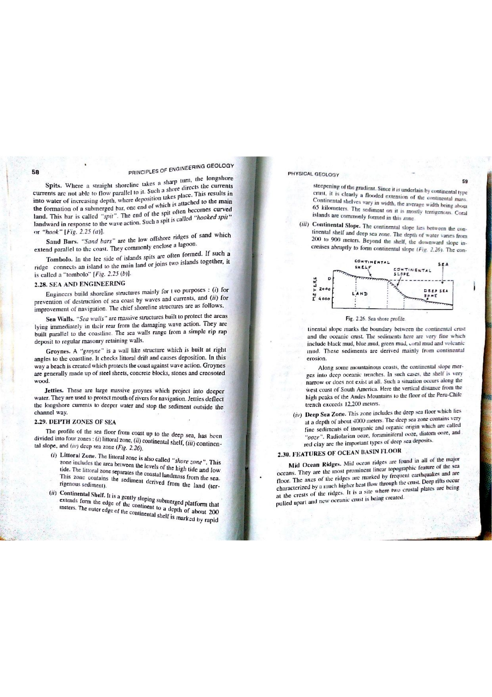

The first-order topography of the Earth is characterized by a fundamental bimodal distribution of surface elevations, vividly displayed on the global Hypsographic (Hypsometric) Curve. Unlike planets lacking plate tectonics and liquid water (such as the Moon or Venus, which exhibit unimodal Gaussian topographic distributions), Earth features two distinct dominant elevation levels reflecting its two distinct crustal regimes:
The ocean basins cover approximately $361 \times 10^6\text{ km}^2$, representing $70.8\%$ of the Earth's total surface area ($510 \times 10^6\text{ km}^2$). The total volume of seawater contained within global oceans is estimated at approximately $1.332 \times 10^9\text{ km}^3$. Dividing this total oceanic volume by total oceanic surface area yields the mean depth of the global ocean:
The depth of $3,729\text{ m}$ represents the exact standard figure derived from early precision soundings by the Challenger Expedition and classical physical geography textbooks.

| Morpho-Bathymetric Province | % of Total Ocean Floor | Depth Range (m) | Average Depth (m) | Dominant Substrate / Geology |
|---|---|---|---|---|
| Continental Shelf | $7.5\%$ | $0 - 130\text{ m}$ | $60\text{ m}$ | Terrigenous sands, silts, carbonate reefs |
| Continental Slope | $8.5\%$ | $130 - 3,000\text{ m}$ | $1,500\text{ m}$ | Hemipelagic muds, submarine canyon channels |
| Continental Rise | $5.0\%$ | $3,000 - 4,000\text{ m}$ | $3,500\text{ m}$ | Coalescing deep-sea turbidite fan aprons |
| Abyssal Plains & Hills | $50.0\%$ | $3,000 - 6,000\text{ m}$ | $4,000\text{ m}$ | Pelagic red clays, siliceous & calcareous oozes |
| Mid-Ocean Ridges | $28.0\%$ | $2,000 - 3,000\text{ m}$ | $2,500\text{ m}$ | Fresh MORB basalt pillow lavas and sheeted dykes |
| Deep-Sea Trenches | $1.0\%$ | $6,000 - 11,000\text{ m}$ | $8,000\text{ m}$ | Trench fill turbidites, pelagic clays, ophiolitic melange |
| Ocean Basin | Surface Area ($10^6 km^2$) | Volume ($10^6 km^3$) | Average Depth (m) | Deepest Point (m) |
|---|---|---|---|---|
| Pacific Ocean | $168.7$ ($46.6\%$) | $669.9$ ($50.1\%$) | $3,970\text{ m}$ (Deepest average) | Challenger Deep ($10,994\text{ m}$) |
| Atlantic Ocean | $85.1$ ($23.5\%$) | $310.4$ ($23.3\%$) | $3,646\text{ m}$ | Puerto Rico Trench ($8,376\text{ m}$) |
| Indian Ocean | $70.6$ ($19.5\%$) | $264.4$ ($19.8\%$) | $3,741\text{ m}$ | Java / Sunda Trench ($7,450\text{ m}$) |
| Arctic Ocean | $15.6$ ($4.3\%$) | $18.8$ ($1.4\%$) | $1,205\text{ m}$ (Shallowest) | Molloy Deep ($5,550\text{ m}$) |
| All Oceans Combined | $361.9\text{ M km}^2$ | $1,332.4\text{ M km}^3$ | $3,729\text{ meters}$ | Challenger Deep ($10,994\text{ m}$) |